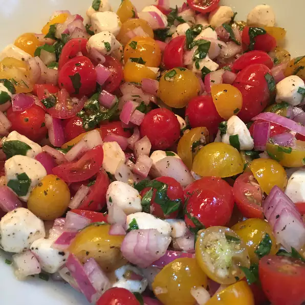

Bruschetta Salad

Bruchetta salad recipe
This salad tastes just like bruschetta, but in a bowl. If you like bruschetta, you will love this salad!
Ingredients
- 6 Roma tomatoes, sliced into rounds
- ½ pound mozzarella cheese, cut into bite-size cubes
- 1 cup crushed garlic-flavored bagel chips
- ½ cup torn fresh basil leaves
- ½ red onion, chopped
- ¼ cup light olive oil
- 3 tablespoons red wine vinegar
- 2 large cloves garlic, minced
- 1 tablespoon dried basil
- salt and ground black pepper to taste
Steps
- Combine tomatoes, mozzarella cheese, bagel chips, basil, red onion, olive oil, red wine vinegar, garlic, basil, salt, and black pepper together in a bowl; toss until evenly combined. Refrigerate until chilled, 15 to 30 minutes.